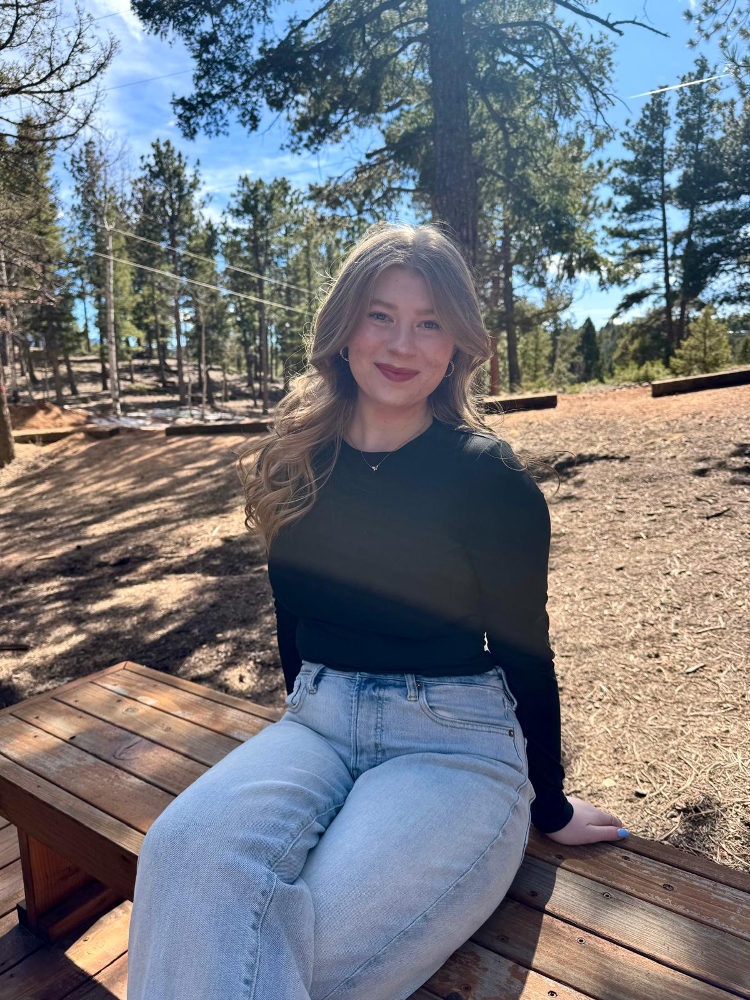

About

Hi, I'm Caroline!
I am currently a student at the University of Colorado, Boulder's Leeds School of Business, pursuing a degree in Marketing with minors in Creative Technology & Design and Information Science. My career path is driven by a fascination with how technical complexity can be translated into intuitive, user-centric experiences. During my time as a Product Marketing Engineering Intern at NI (Emerson), I led projects to revamp digital content hubs and develop intuitive tools like digital flipbooks for sales teams.
Outside of my professional work, I’m naturally curious and always looking for ways to grow and explore. I love getting lost in a good book, whether it’s fiction that stretches my imagination or nonfiction that challenges my perspective. Yoga keeps me grounded and disciplined, reinforcing the importance of balance, mindfulness, and consistency—qualities I also bring to my work. I’m also energized by discovering new restaurants and experiences, which fuels my creativity and keeps me tapped into culture, trends, and the small details that shape how people connect with brands.
Check out some of my work here!